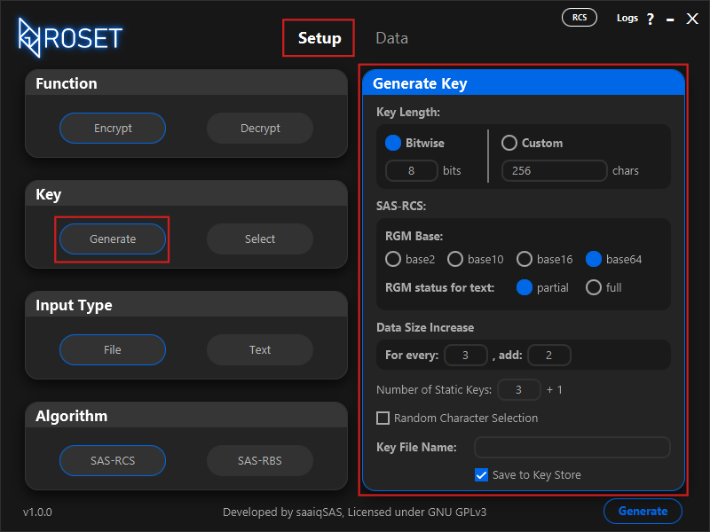

2. Generating Keys
by: saaiqSAS
Last Updated: 11/2/2025
In this section, we will explore the specifics of the Generate Key option found in the
Setup tab (Fig.2.1). The ROS Encryption Tool generates keys using randomly generated elements,
based on the user-selected options. Each combination of options can have varying impacts on security, output data size,
and performance, with differences ranging from minor to significant. We will thoroughly review each available choice,
explaining its functionality and impact. For more in-depth cryptographic details about any of the options,
you can refer to the official Algorithms Documentation .

Fig.2.1
Key Length
There are two ways to specify your key length: Bitwise or Custom.
In the Bitwise option, you can enter a value between 7 and 20, and the key length will be the power of 2 corresponding to the entered value.
With the Custom option, you can directly specify the key length, which can range from 100 to 1,050,000.
It's important to note that while the SAS-RCS encryption algorithm (Text level encryption) supports any key length,
the SAS-RBS encryption algorithm (Binary level encryption) strictly requires key lengths that are powers of 2.
Therefore, choosing the Bitwise option ensures the generated key is compatible with both algorithms.
Note that while larger key lengths significantly enhance security, they can negatively affect performance by increasing processing time.
SAS-RCS
The options in this section apply exclusively to the SAS-RCS encryption algorithm and do not affect the SAS-RBS algorithm.
The SAS-RGM is a component of the SAS-RCS algorithm, designed to securely convert any incompatible text or binary data into a
compatible text format, enabling the smooth continuation of the SAS-RCS encryption process.
RGM Base
One of the initial steps in the SAS-RGM algorithm is converting incompatible data into a baseX format before it undergoes further processing.
The RGM Base options (base2, base10, base16, base64) allow you to choose the base for this conversion.
It's important to note that the smaller the base you choose, the larger the resulting encrypted data will be.
Smaller bases also improve security by making it harder for attackers to perform frequency analysis on the data.
However, if your key length is large, the effect of the chosen base on security might be less significant.
That said, using smaller bases can still enhance security due to the larger output data.
RGM status for text
The SAS-RCS algorithm encrypts text character by character. Not all characters are considered incompatible during encryption,
meaning that not every character needs to go through the SAS-RGM step. Hence, the RGM status for text options allow you to choose
whether only incompatible characters or all characters should pass through the RGM process.
The partial option means only incompatible characters will pass through the RGM. This helps minimize the increase in encrypted
data size when processing text. However, note that in terms of security, this option may reduce the level of randomness in the encrypted text.
The full option ensures that every character in the input text will go through RGM. Choosing this option will maximize the increase
in encrypted data size. It also provides the highest possible security within the RGM step of SAS-RCS, depending on the chosen base.
Note that when encrypting files with SAS-RCS, all bytes will undergo RGM to be securely converted into compatible text.
Data Size Increase
In this section, you can specify a ratio to control the increase in encrypted data size for both SAS-RCS and SAS-RBS. The ratio follows the format
for every : add, where in SAS-RCS, for every and add refer to characters, while in SAS-RBS, they refer to bits.
For example, if the ratio is 3:2, as shown in Fig2.1, in SAS-RCS, this means that for every 3 characters, 2 additional characters will be added.
In SAS-RBS, this would mean that for every 3 bits, 2 extra bits will be added.
The maximum value for for every is 9, and the maximum value for add is 99.
When new data units are added to the original data, they are inserted in a secure and random manner, ensuring that they can only be correctly reversed using the correct key.
Number of Static Keys
The SAS-ROS Cipher, which forms the basis for the SAS-RCS/RBS Encryption Algorithm, uses a combination of a Dynamic Key and a
Static Key to perform random substitutions. Similarly, the SAS-ROS step in the SAS-RCS/RBS Encryption Algorithm also employs a
Dynamic Key, but it is combined with multiple Static Keys for enhanced security. The greater the number of Static Keys,
the more random and secure the encrypted data will be, providing stronger protection against attacks like
frequency analysis, CCA (Chosen Ciphertext Attack), and CPA (Chosen Plaintext Attack).
The maximum value for Number of Static Keys is 100.
Even with a large number of Static Keys, the impact on performance will be minimal. The only trade-off is the key file size.
The key file stores the number of Static Keys you input into the field. You may have noticed a +1 next to the
input field in Fig2.1. This number indicates the additional Static Keys that will be used during processing,
in addition to the number you entered. These extra Static Keys will not take up space in your key file, as they will
be generated when the key file is loaded into memory.
Random Character Selection
When generating the key, the required units are selected from the Unicode Character Set. By default, with this option disabled,
the units are chosen in an orderly manner and then securely shuffled. However, when the option is enabled, the units are selected
randomly from across the entire set, without any shuffling involved.
Note that enabling this option may significantly increase key generation time, especially for larger keys.
Key File Name
This is where you enter the name for the key file you wish to generate. Please note that this name will also be stored inside the
key file and will commonly be used to refer to the key within the tool. Therefore, changing the name after the key file has been generated
is not possible. Be sure to double-check that the entered name is correct and exactly what you want.
Save to Key Store
When enabled, the generated key file will be saved to the roset_keystore directory/folder, and the key will appear in the
table under the Select Key section of the Setup tab. When disabled, clicking the Generate button will prompt
a window to pop up, allowing you to choose the location where the new key file will be saved.